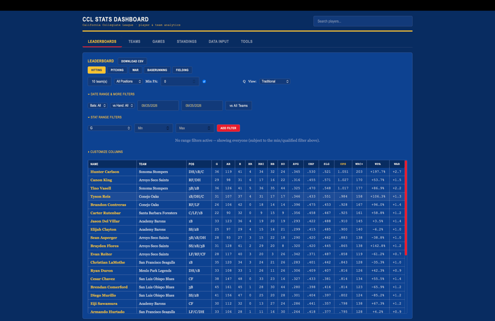
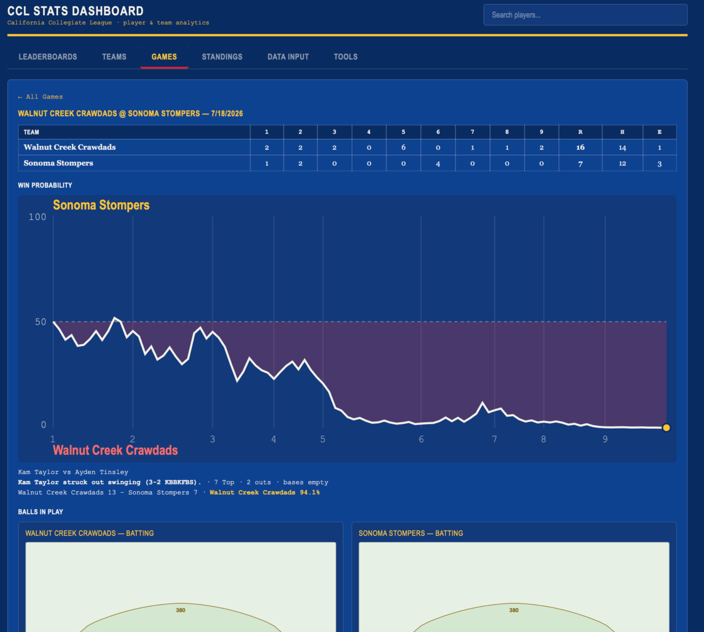
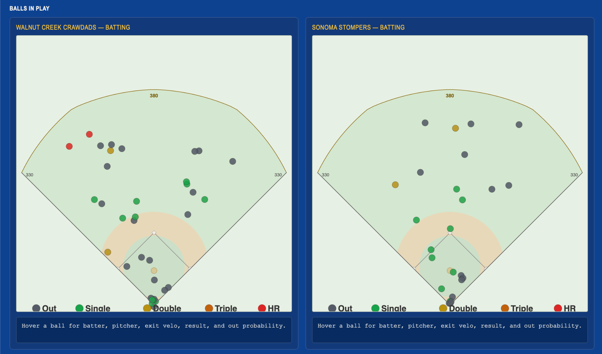
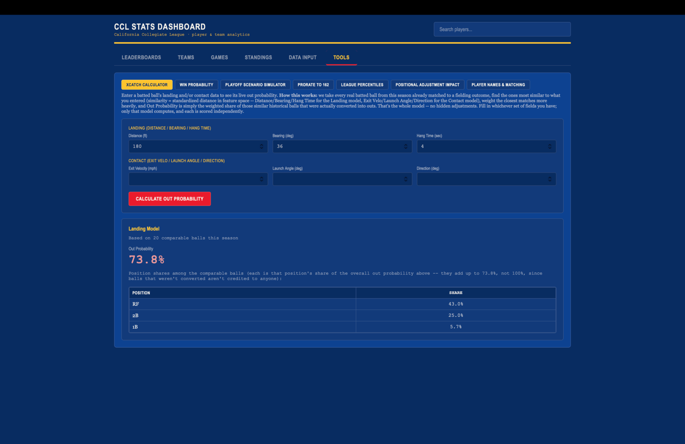
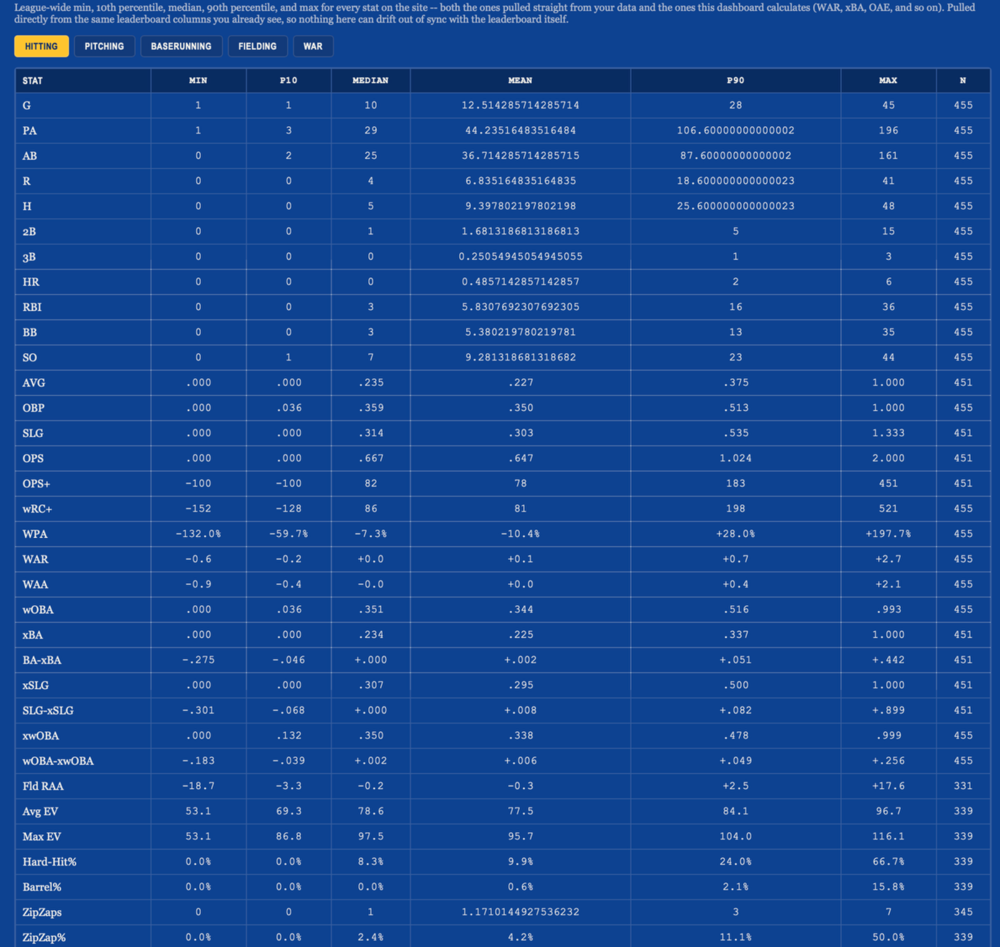

An end-to-end analytics platform combining event data, pitch and batted-ball measurements, statistical modeling, and interactive decision-support tools for player and team evaluation.
The platform brings several analytical layers into one interface: player leaderboards, team and game views, win probability, batted-ball visualization, expected statistics, fielding evaluation, league percentiles, and supporting tools for scouting and decision support.




